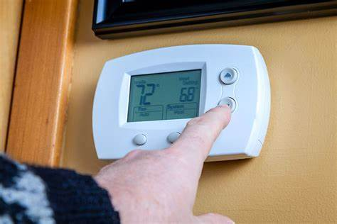
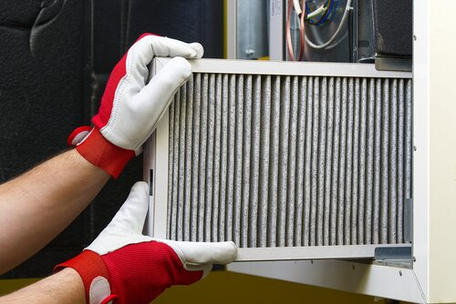
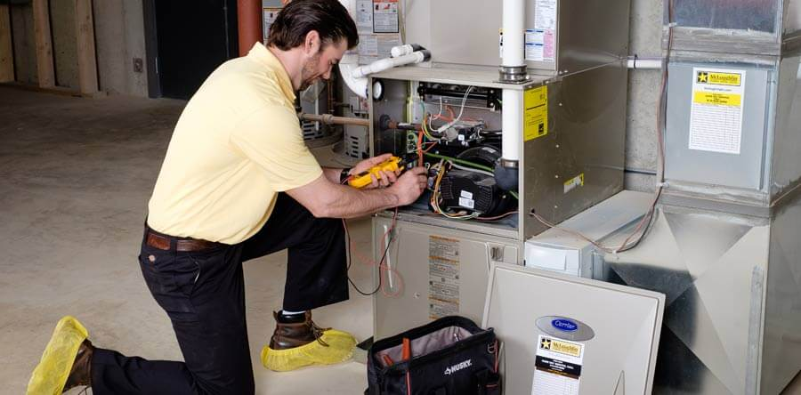
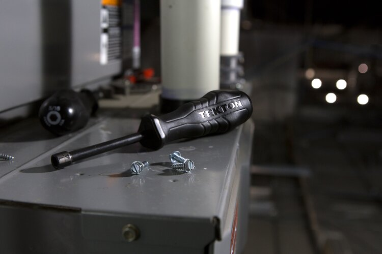

Furnce Servives
Repair services
Before you call us there are some things you can do first. If none of these things work then please call us and we will send some one over at the earliest convenience.
Thermostat
1) Check to be sure the batteries are still good. 2) Make sure our thermostat is set to “heat”. 3) If it is programable then ensure it is set to the correct day. 4) None of this works the furnace could be without power.
Breakers and Switches
1) Check the breaker on the electrical panel in our house to make sure it has not been flipped. The breaker should be labeled as furnace or heat. 2) If off then flip the break on, if the breaker trips instantly don't try to reset it but contact us right away as it can be hazardous.
Buy a New Air Filter
Another issue could be that the air filter is dirty, this is actually more common than you would think. A dirty air filter can cause many problems. It restricts air from flowing, preventing your house from warming up which in turn will cause your furnace to overwork and increasing your heating bill. On the other hand, it is important to have a filter. It not only keeps your air clean but also keeps the inside of your furnace clean from dust. Dust in a furnace can then lead to further issues to the preformance of your furnace. The optimal time for replacing your air filter is at least once every three months.
Look at the Condensate Pan/Pump
Many furnaces produce condensation when operating. If your furnace has a condensate drain (it will be a small PVC pipe) then make sure it is not clogged. If it is clogged try to unclog it and see if it fixes the issue.
Check Pilot Light
If the furnace is old then it could have a pilot light that needs to be lit. Look on the furnace to find instructs to relight the pilot. Note: Many newer furnaces do not use a pilot light.
If doing all of these things doesn't fix the problem then please call us now to set an appointment.
If for what ever reason your furnace can not be repaired or if it is simply old and you would prefer a new one then we would love to help you by installing a completely new one.
Maintenance
Why does my furnace need maintenance?
Getting your furnace Maintenace can be beneficial for several reason. It will reduce the chance for future service calls, will increase efficiency not only keeping your house warm but also reducing your heating bill. Often preventing is less expensive than repairing.
What do we offer as maintenance?
We will check all components in your furnace as well as the air flow. We have specialty tools to make sure that everything is working as it should. If we do find a problem then we will inform you on any actions that will need to be taken.
We also offer a yearly membership, contact us now to learn more.
Installation
Why Get a New Furnace?
1) The furnace could be old and is currently running the risk of failure, replace it before it fails on you. 2) Old Furnaces are usually less efficient which in turns increases the cost to run it. 3) Trouble heating the house. 4) If you are need to do repeated repairs you should consider getting a replacement.
